Current focus
Efficient omni-modal learning for generalized video understanding, with an emphasis on scalable training and practical inference.
Killian Steunou
I am an industrial PhD student at Institut Polytechnique de Paris and Moments Lab, working on efficient omni-modal learning for generalized video understanding.
Efficient omni-modal learning for generalized video understanding.
Efficiency, multimodal learning, tracking, and deployment-aware model design.
Scientific rigor, clear writing, reproducible pipelines, and pragmatic engineering.
About
I am currently pursuing an industrial PhD in machine learning at Institut Polytechnique de Paris and Moments Lab. The work sits at the intersection of modern multimodal models and the practical limits that define whether they remain useful in the real world.
I am especially drawn to problems in computer vision and deep learning because visual perception feels foundational to intelligence, both human and artificial. I like models that can scale, adapt, and still remain legible enough to improve.
Efficient omni-modal learning for generalized video understanding, with an emphasis on scalable training and practical inference.
Open-source practices, transparent experimentation, and reproducible pipelines that other researchers can meaningfully build on.
Experience
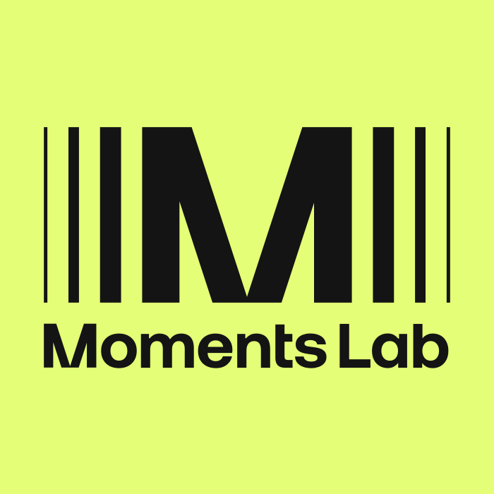
Moments Lab
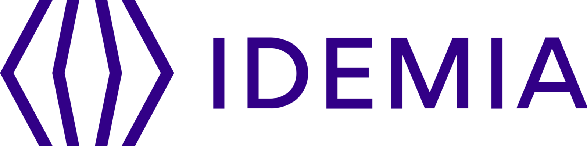
Idemia
Collecte Localisation Satellites
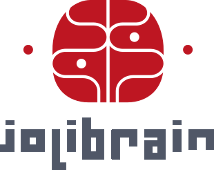
JoliBrain
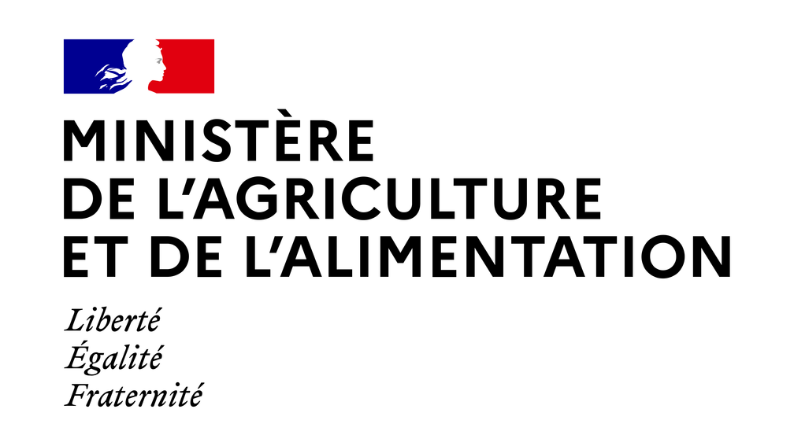
French Ministry of Agriculture
Education
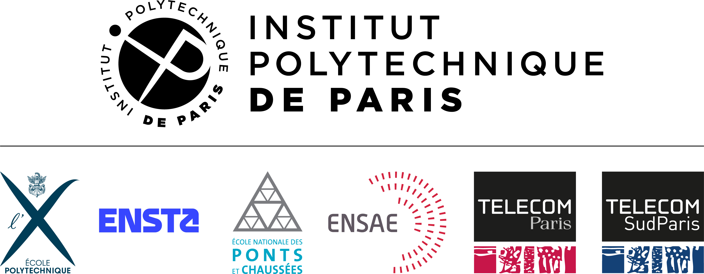
Institut Polytechnique de Paris
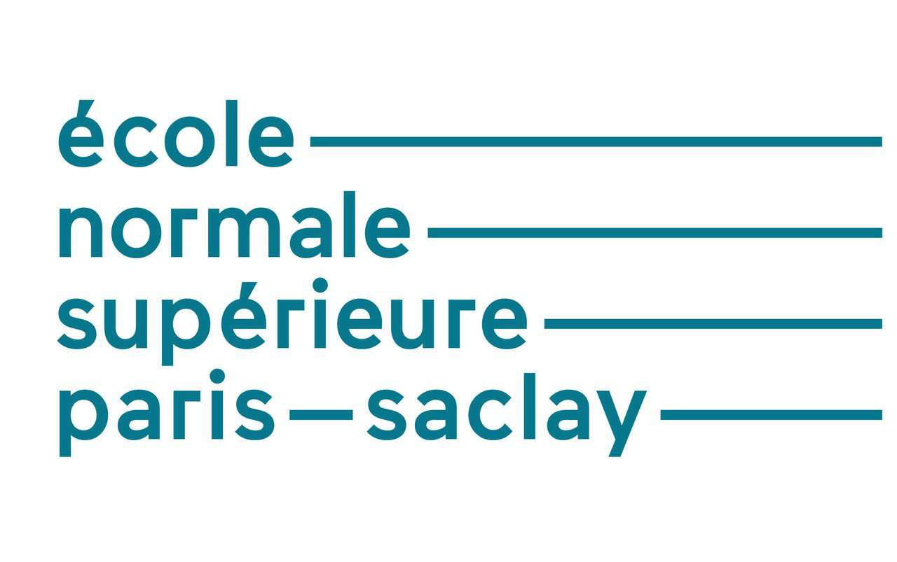
ENS Paris-Saclay
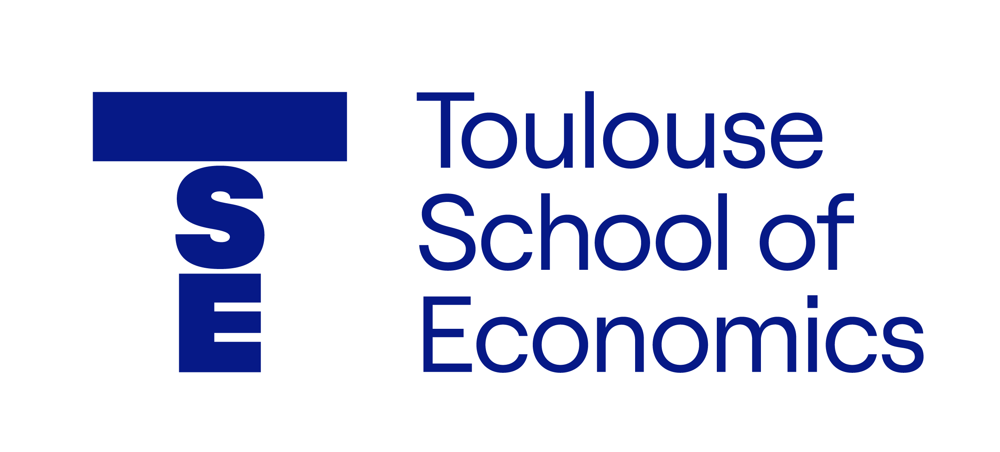
Toulouse School of Economics
University of Copenhagen
Toulouse School of Economics
Research
We show, theoretically and empirically, that SPCA-based classifiers can be more robust than PCA-based alternatives under adversarial attack.
I reproduced the SCONES framework and evaluated how score-based modeling changes the behavior of regularized transport on synthetic distributions.
I extended TTT-MAE with an online setting and studied how adaptation behaves when distribution shift keeps evolving at inference time.
We reproduced 3DETR on SUN RGB-D and explored how a lean transformer detector behaves when extended with RGB information.
Projects


An implementation of Owl-ViT for zero-shot object detection in videos using natural-language prompts.

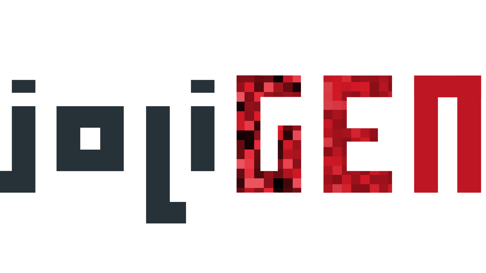
I integrated ControlNet-inspired edge controls and SAM-based masking into joliGEN, then helped improve its documentation.

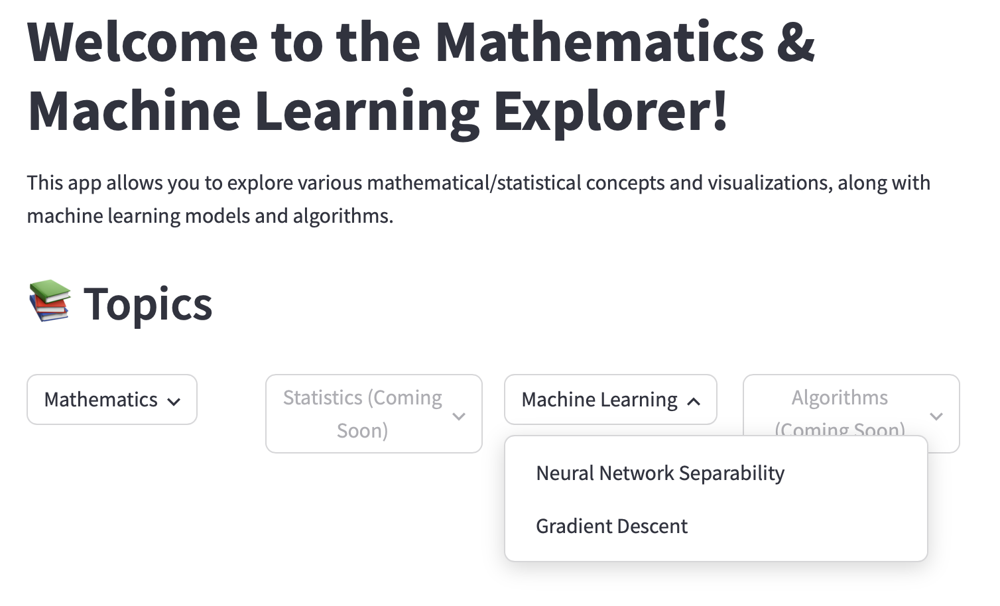
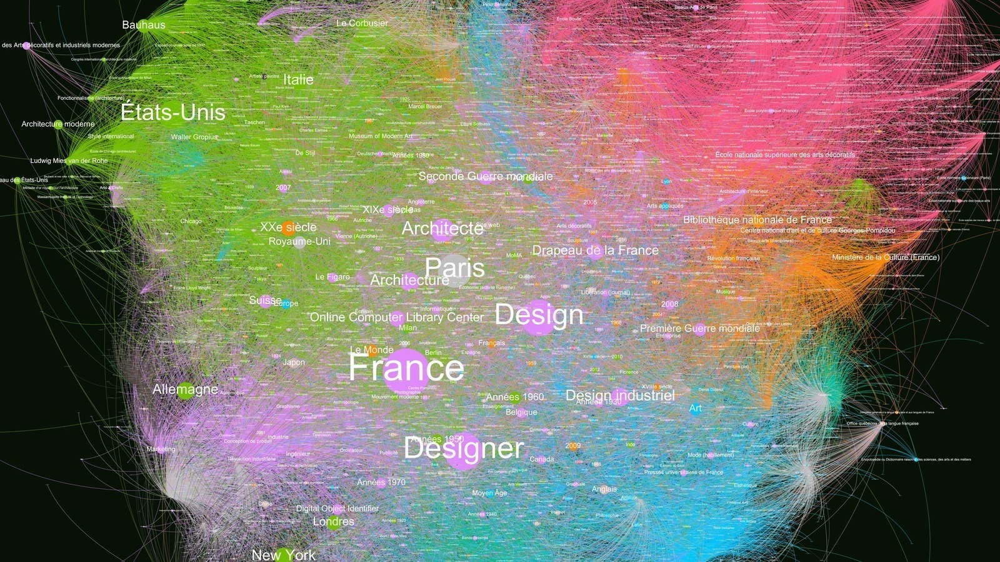
A French-language concept graph built by scraping linked Wikipedia topics and exporting the result for graph exploration.

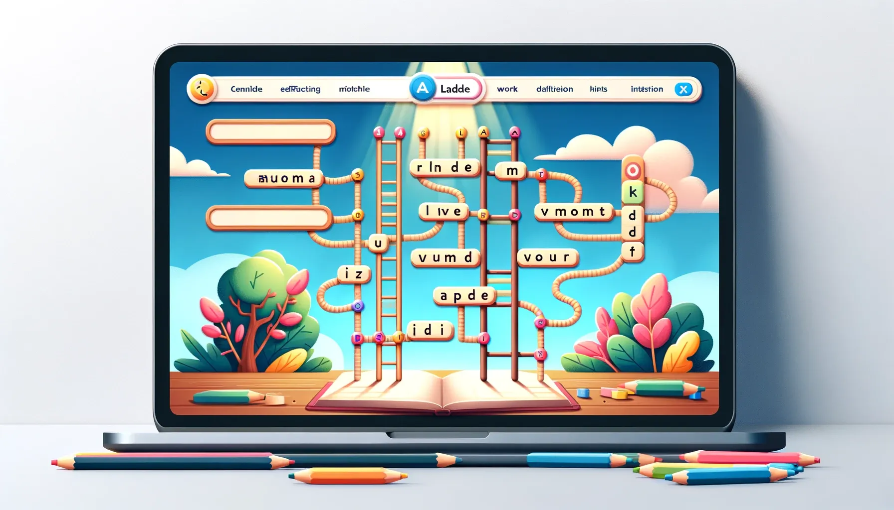
A French word-ladder generator that computes the shortest sequence of one-letter edits between two words.

Writing
An analysis of how efficiency moved from the margins to the center of video understanding research from 2015 to 2025.
A worked visual walkthrough of n-grams, TF-IDF, BLEU, ROUGE-L, METEOR, and CIDEr for captioning research.
Demos
Whisper-powered subtitling for audio and video with a fast demo workflow.
Interactive segmentation-based background removal for video.
Visual explanations for mathematics, statistics, machine learning, and algorithms.
Contact
I am always interested in thoughtful conversations around machine learning research, multimodal systems, visual understanding, and the engineering decisions that make models usable outside the lab.
 LinkedIn
LinkedIn
 GitHub
GitHub